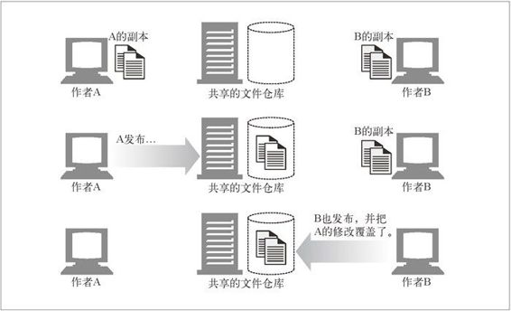

19.2 WebDAV 与协作写作
WebDAV（Web Distributed Authoring and Versioning，分布式写作与版本管理）为 Web 发布增添了新的内容——协作。当前，最常见的协作实践（电子邮件或分布式文件共享）显然没有什么技术含量。这种实践很不方便还容易出错，而且几乎没有过程控制。请考虑运行一个为多国用户服务的汽车制造商的多语种网站。很容易看出，它非常需要安全可靠的带有发布原语和协作原语（比如锁定和版本管理等）的健壮系统。
WebDAV（作为 RFC 2518 发表）专注于对 HTTP 进行扩展，以提供协作写作的适宜平台。目前是在 IETF 的组织下，得到了许多厂商的支持，包括 Adobe、Apple、IBM、Microsoft、Netscape、Novell、Oracle 以及 Xerox。
19.2.1 WebDAV的方法
WebDAV 定义了一些新的 HTTP 方法并修改了其他一些 HTTP 方法的操作范围。WebDAV 新增的方法如下所述。
PROPFIND
获取资源的属性。
PROPPATCH
在一个或多个资源上设定一个或多个属性。
MKCOL
创建集合。
COPY
从指定的源端把资源或者资源集合复制到指定的目的地。目的地可以在另一台机器上。
MOVE
从指定的源端把资源或者资源集合移动到指定的目的地。目的地可以在另一台机器上。
LOCK
锁定一个或多个资源。
UNLOCK
把先前锁定的资源解锁。
WebDAV 修改的 HTTP 方法有 DELETE、PUT 以及 OPTIONS。本章稍后将详细讨论新方法和修改后的方法。
19.2.2 WebDAV与XML
WebDAV 的方法通常都需要在请求和响应中关联大量的信息。HTTP 通常用报文首部来交换这类信息。然而，只在首部传输必要的信息已经暴露了一些局限性，包括难以有选择地对请求中的多个资源应用首部信息、不利于表示层次结构等。
WebDAV 借助了 XML 解决这个问题，它是一种元标记语言，提供了描述结构化数据的格式。XML 为 WebDAV 提供了以下解决方案。
对那些描述数据处理方式的指令进行格式化的方法。
在服务器上对复杂的响应进行格式化的方法。
交换与所处理的集合和资源有关的定制信息的方法。
承载数据自身的灵活工具。
对大多数国际化问题的健壮解决方案。
习惯上会把 XML 文档里引用的方案定义保存在一个 DTD（Document Type Definition，文档类型定义）文件中。因此，试图解释 XML 文档时，可以根据其中的 DOCTYPE 定义项得到和这份 XML 文档相关的 DTD 文件名。
WebDAV 定义了一个显式的 XML 名字空间——“DAV:”。简单地说，XML 的名字空间就是元素或属性的名字的集合。名字空间限定了嵌入的名字在域内必须是唯一的，这样就可以避免名字冲突。
WebDAV 规范（也就是 RFC 2518），定义了完整的 XML 方案。预定义的方案允许解析软件不必读取 DTD 文件，而是根据预定义的 XML 方案来解释。
19.2.3 WebDAV首部集
WebDAV 的确引入了一些 HTTP 首部来增强新方法的功能。本节对其进行了简要介绍，请从 RFC 2518 中获取更多信息。新的首部如下所示。
DAV
用于了解服务器的 WebDAV 能力。WebDAV 支持的所有资源在响应 OPTIONS 请求时都要含有此首部。更多细节参见 19.2.14 节。
DAV = "DAV" ":" "1" ["," "2"] ["," 1#extend]
Depth
这是一个关键元素，用于把 WebDAV 扩展到支持含有多级层次关系的资源组。参见 19.2.10 节以获取更多关于集合的详细解释。
Depth = "Depth" ":" ("0" | "1" | "infinity")
我们来看一个简单的例子。假设有个目录 DIR_A，其中有文件 file_1.html 和 file_2.html。如果某方法设置了 Depth:0，此方法就只作用到目录 DIR_A 自身；如果设置了 Depth:1，就作用到目录 DIR_A 及其包含的文件 file_1.html 和 file_2.html。
Depth 首部对 WebDAV 定义的许多方法进行了修饰。用到 Depth 首部的方法有：LOCK、COPY 以及 MOVE。
Destination
定义这个首部是用来辅助 COPY 或 MOVE 方法标识目标 URI 的。
Destination = "Destination" ":" absoluteURI
If
定义的唯一一个状态令牌是锁定令牌（参见 19.2.5 节）。If 首部定义了一组条件，如果这些条件都取值为非，请求就失败。类似 COPY 和 PUT 等方法可以在 If 首部中指定前置条件，使其有条件地适用。在实践中，最常见的需要满足的前置条件是先获得锁。
If ="If"":" (1*No-tag-list | 1*Tagged-list)
No-tag-list = List
Tagged-list = Resource 1*List
Resource = Coded-URL
List = "(" 1*(["Not"](State-token | "[" entity-tag "]")) ")"
State-token = Coded-URL
Coded-URL = "<" absoluteURI ">"
Lock-Token
UNLOCK 方法需要用这个首部指定要删除的锁。LOCK 方法的响应中也有 Lock-Token 首部，载有关于锁定令牌的必须信息。
Lock-Token ="Lock-Token"":"Coded-URL
Overwrite
用于 COPY 和 MOVE 方法，指定是否要覆盖目标。参见本章后面关于 COPY 和 MOVE 方法的详细介绍。
Overwrite ="Overwrite"":" ("T" |"F")
Timeout
客户端用这个请求首部指定要求锁定的超时值。参见 19.2.5 节获取更多信息。
TimeOut = "Timeout" ":" 1#TimeType
TimeType = ("Second-" DAVTimeOutVal | "Infinite" | Other)
DAVTimeOutVal = 1*digit
Other = "Extend" field-value
我们已经概述了 WebDAV 的意图及其实现，下面来仔细看看它提供的各种功能。
19.2.4 WebDAV的锁定与防止覆写
根据定义，协作要有不止一个人在给定的文档上工作。图 19-3 展示了和协作相关的固有问题。
在这个例子中，作者 A 和 B 联合编写一份规范。A 和 B 各自独立地对文档做了一些修改。A 把更新的文档上传到仓库。之后，B 也把自己的版本提交到仓库。不幸的是，由于 B 压根不知道 A 的修改，他没有把自己的版本与 A 的版本进行合并，从而导致 A 的修改丢失。
为了改善这种问题，WebDAV 支持锁定的概念。但单靠锁定不能完全解决这个问题，还需要版本管理和消息传送才能提供完整的解决方案。
WebDAV 支持两种类型的锁：
对资源或集合的独占写锁；
对资源或集合的共享写锁。
独占写锁保证只有锁的拥有者有写权限。这种锁完全消除了潜在的冲突。共享写锁允许多个人在某个给定的文件上工作。这种锁定机制在多名作者对各自的活动都知晓的环境下可以很好地工作。WebDAV 通过 PROPFIND 方法提供了属性发现机制，可以判断对锁定的支持和所支持的锁定类型。

图 19-3 丢失更新问题
WebDAV 中有两个新方法支持锁定机制：LOCK 和 UNLOCK。
为了实现锁定，还需要有一种识别作者的机制。WebDAV 采用的是摘要认证（参见第 13 章）。
批准锁定时，服务器将域内唯一的令牌返回给客户端。与此相关的规范是 opaquelocktoken 锁定令牌 URI 方案。当客户端随后要执行写操作时，它连接到服务器并完成摘要认证步骤。一旦认证完成，WebDAV 客户端就发出带有锁定令牌的 PUT 请求。这样，只有正确的用户加上锁定令牌才可以完成写操作。
19.2.5 LOCK方法
WebDAV 中的一个强大特性是它能够允许单个 LOCK 请求锁定多个资源。WebDAV 的锁定不需要客户端保持与服务器的连接。
这是一个简单的 LOCK 请求示例：
LOCK /ch-publish.fm HTTP/1.1
Host: minstar
Content-Type: text/xml
User-Agent: Mozilla/4.0 (compatible; MSIE 5.0; Windows NT)
Content-Length: 201
<?xml version="1.0"?>
<a:lockinfo xmlns:a="DAV:">
<a:lockscope><a:exclusive/></a:lockscope>
<a:locktype><a:write/></a:locktype>
<a:owner><a:href>AuthorA</a:href></a:owner>
</a:lockinfo>
提交的 XML 以 <lockinfo> 元素作为其基元素。在 <lockinfo> 结构中，有以下 3 种子元素。
<locktype>
指明锁定的类型。当前只有一种可选值，即 write。
<lockscope>
指明这是独占锁还是共享锁。
<owner>
这个字段设置为当前持有锁的人。
下面是这个 LOCK 请求的成功响应：
HTTP/1.1 200 OK
Server: Microsoft-IIS/5.0
Date: Fri, 10 May 2002 20:56:18 GMT
Content-Type: text/xml
Content-Length: 419
<?xml version="1.0"?>
<a:prop xmlns:a="DAV:">
<a:lockdiscovery><a:activelock>
<a:locktype><a:write/></a:locktype>
<a:lockscope><a:exclusive/></a:lockscope>
<a:owner xmlns:a="DAV:"><a:href>AutherA</a:href></a:owner>
<a:locktoken><a:href>opaquelocktoken:*****</a:href></a:locktoken>
<a:depth>0</a:depth>
<a:timeout>Second-180</a:timeout>
</a:activelock></a:lockdiscovery>
</a:prop>
<lockdiscovery> 元素充当着存储锁信息的容器。嵌入在 <lockdiscovery> 元素中的子元素有 <activelock>，它持有请求发送来的信息（<locktype>、<lockscope> 以及 <owner>）。此外，<activelock> 中还含有以下子元素。
<locktoken>
用称为 opaquelocktoken 的 URI 方案唯一标识的锁。考虑到 HTTP 天生就是无状态的，该令牌用于在将来的请求中标识锁的所有权。
<depth>
它是 Depth 首部的值的副本。
<timeout>
指明锁的超时时间。在上面的响应中，超时值是 180 秒。
1. opaquelocktoken方案
opaquelocktoken 是设计用来在所有时间内对所有资源提供唯一令牌的方案。为了确保唯一性，WebDAV 规范规定采用 ISO-11578 中描述的 UUID 机制。
在实际实现的时候，有一定的回旋余地。服务器可以选择为每个 LOCK 请求生成一个 UUID，或者生成单个 UUID 并通过在结尾附加额外的字符来维护唯一性。从性能角度衡量，选择后面那种方法更好。不过，如果服务器选择实现后面那种方法，就必须保证附加的扩展部分永远不会重用。
2. XML元素<lockdiscovery>
XML 元素 <lockdiscovery> 提供了发现活跃的锁的机制。如果有人试图去给已经被锁定的文件上锁，他会收到指明当前拥有者的 XML 元素 <lockdiscovery>。<lockdiscovery> 元素列出了所有未解除的锁和相应的属性。
3. 锁的刷新和Timeout首部
为了刷新锁，客户端需要重新提交锁定请求，并把锁定令牌放在 If 首部中。返回的超时值可能和早先的超时值不同。
除了接受服务器给定的超时值，客户端也可以在 LOCK 请求中指明要求的超时值。这可以通过 Timeout 首部做到。Timeout 首部的语法允许客户端在逗号分隔的列表中描述一些选项。例如：
Timeout : Infinite, Second-86400
服务器没有义务必须满足这些选项。但是，客户端必须在 XML 元素 <timeout> 中提供锁定过期的时间。无论怎样，锁定超时只是一个指导值，服务器不一定受其约束。管理员可以手工重设，某些异常事件也可能导致服务器重设锁。客户端应当避免使锁定时间太长。
尽管有这些原语，图 19-3 中显示的“丢失更新问题”并没有得到完全解决。为了彻底解决这个问题，需要带有版本控制的协作事件系统。
19.2.6 UNLOCK方法
UNLOCK 方法用于解除资源上的锁。示例如下：
UNLOCK /ch-publish.fm HTTP/1.1
Host: minstar.inktomi.com
User-Agent: Mozilla/4.0 (compatible; MSIE 5.0; Windows NT)
Lock-Token:
opaquelocktoken:*********
HTTP/1.1 204 OK
Server: Microsoft-IIS/5.0
Date: Fri, 10 May 2002 20:56:18 GMT
与大多数资源管理请求一样，要使 UNLOCK 操作成功，WebDAV 要满足两个条件：第一，先前已经成功完成了摘要认证步骤；第二，要与在 Lock-Token 首部中发送的锁定令牌相匹配。
如果解锁成功，会向客户端发送 204 No Content 状态码。表 19-1 总结了 LOCK 和 UNLOCK 方法可能的状态码。
表19-1 LOCK和UNLOCK方法的状态码
| 状 态 码 | 定 义 者 | 方 法 | 效 果 |
|---|---|---|---|
| 200 OK | HTTP | LOCK | 表明锁定成功 |
| 201 Created | HTTP | LOCK | 表明通过创建该资源已成功锁定了不存在的资源 |
| 204 No Content | HTTP | UNLOCK | 表明解锁成功 |
| 207 Multi-Status | WebDAV | LOCK | 请求锁定多个资源。返回的资源状态码不完全一样，因此，这些状态码被封装在一个 207 响应中 |
| 403 Forbidden | HTTP | LOCK | 表明客户端没有权限锁定资源 |
| 412 Precondition Failed | HTTP | LOCK | 可能是随 LOCK 命令发送的 XML 中指明要满足某条件而服务器无法完成，也可能是无法强制执行锁定令牌 |
| 422 Unprocessable Property | WebDAV | LOCK | 语义不适用——比如为不是集合的资源指定了非 0 的 Depth |
| 423 Locked | WebDAV | LOCK | 已处于锁定状态 |
| 424 Failed Dependency | WebDAV UNLOCK | UNLOCK | 指定了其他动作，并以它们的成功作为解锁的前提条件。如果无法成功完成这些有依赖关系的动作，就返回此错误码 |
19.2.7 属性和元数据
属性描述了资源的信息，包括作者的名字、修改日期、内容分级，等等。HTML 中的元标记的确提供了把这种信息嵌入在内容之中的机制，但很多种资源（比如所有二进制数据）都无法嵌入元数据。
像 WebDAV 这样的分布式协作系统对属性的需求就更复杂了。例如，考虑作者属性：当文档被编辑之后，应当更新这个属性以反映新的作者。WebDAV 专门把这种可动态修改的属性称为“活”属性。与之相对的是更长久的静态属性，比如 Content-Type，称为“死”属性。
为了支持查找和修改属性，WebDAV 扩展了 HTTP 以包括两个新方法：PROPFIND 和 PROPPATCH。后面几节给出了示例并讲解了相关的 XML 元素。
19.2.8 PROPFIND方法
PROPFIND 方法用于获取一个给定文件或一组文件（也称为“集合”）的属性。PROPFIND 支持 3 种类型的操作：
请求所有的属性及其值；
请求一组属性及其值；
请求所有属性的名称。
下面这个例子中，请求的是所有属性及其值：
PROPFIND /ch-publish.fm HTTP/1.1
Host: minstar.inktomi.com
User-Agent: Mozilla/4.0 (compatible; MSIE 5.0; Windows NT)
Depth: 0
Cache-Control: no-cache
Connection: Keep-Alive
Content-Length: 0
<propfind> 请求元素指定了从 PROPFIND 方法返回的属性。下面的列表总结了用于 PROPFIND 请求的一些 XML 元素：
<allprop>
要求返回所有属性的名字和值。为了请求所有的属性及其值，WebDAV 客户端可以将 XML 子元素 <allprop> 作为 <propfind> 元素的一部分发送，或提交一个没有主体的请求。
<propname>
指定要返回属性名字的集合。
<prop>
<propfind> 元素的子元素。指定需要返回值的属性。例如：<a:prop> <a:owner/>...... </a:prop>。
下面是对一个 PROPFIND 请求示例的响应：
HTTP/1.1 207 Multi-Status
Server: Microsoft-IIS/5.0
...........
<?xml version="1.0"?>
<a:multistatusxmlns:b="urn:uuid:********/" xmlns:c="xml:"
xmlns:a="DAV:">
<a:response>
<a:href>http://minstar/ch-publish.fm </a:href>
<a:propstat>
<a:status>HTTP/1.1 200OK</a:status>
<a:prop>
<a:getcontentlength b:dt="int">1155</a:getcontentlength>
......................
......................
<a:ishidden b:dt="boolean">0</a:ishidden>
<a:iscollection b:dt="boolean">0</a:iscollection>
</a:prop>
</a:propstat>
</a:response></a:multistatus>
在这个例子中，服务器以 207 Multi-Status 状态码进行响应。WebDAV 将 207 用在 PROPFIND 和其他几个 WebDAV 方法上，它们同时作用在多个资源上并且每个资源可能有不同的响应。
响应中的几个 XML 元素的定义如下所示。
<multistatus>
多重响应的容器。
<href>
标识资源的 URI。
<status>
包含特定请求的 HTTP 状态码。
<propstat>
将一个 <status> 元素和一个 <prop> 元素组织在一起。<prop> 元素可以包含给定资源的一个或多个属性名 / 值对。
在上面列出的示例响应中，响应是针对 URI：http://minstar/ch-publish.fm 的。<propstat> 元素内嵌了一个 <status> 元素和一个 <prop> 元素。服务器为这个 URI 回复了一个 200 OK 响应，它定义在 <status> 元素中。<prop> 元素中有若干子元素，例子中只列出了一部分。
PROPFIND 的实例应用是对目录列表的支持。考虑到 PROPFIND 请求的表达能力，单次调用就能获取集合的整个层次结构和其中各个独立实体的所有属性。
19.2.9 PROPPATCH方法
PROPPATCH 方法为对指定资源设置或删除多个属性提供了原子化机制。原子化可以保证要么所有请求都成功，要么跟所有请求都没发出一样。
PROPPATCH 方法的 XML 基元素是 <propertyupdate>。它作为一个容器使用，容纳了需要修改的属性。XML 的 <set> 和 <remove> 元素用于描述操作。
<set>
指定要设置的属性值。<set> 含有一个或多个 <prop> 子元素，它们依次包含了该资源上要设置的属性的名 / 值对。如果属性已存在，其值就被覆盖。
<remove>
指定要删除的属性。与 <set> 不同的是，在 <prop> 容器中只列出了属性的名称。
下面这个小例子设置并删除了 owner 属性：
<d:propertyupdate xmlns:d="DAV:" xmlns:o="http://name-space/scheme/">
<d:set>
<d:prop>
<o:owner>Author A</o:owner>
</d:prop>
</d:set>
<d:remove>
<d:prop>
<o:owner/>
</d:prop>
</d:remove>
</d:propertyupdate>
对 PROPPATCH 请求的响应和对 PROPFIND 请求的响应非常像。参见 RFC 2518 以获取更多信息。
表 19-2 总结了 PROPFIND 和 PROPPATCH 方法的状态码。
表19-2 PROPFIND与PROPPATCH方法的状态码
| 状 态 码 | 定 义 者 | 方 法 | 效 果 |
|---|---|---|---|
| 200 OK | HTTP | PROPFIND, PROPPATCH | 命令成功 |
| 207 Multi-Status | WebDAV | PROPFIND, PROPPATCH | 作用于一个或多个资源（或者集合）时，每个对象的状态都被封装到一个 207 响应中。这是一种常见的成功响应 |
| 401 Unauthorized | HTTP | PROPATCH | 需要授权才能完成对属性的修改操作 |
| 403 Forbidden | HTTP | PROPFIND, PROPPATCH | 对于 PROPFIND 来说，客户端不允许访问该属性。对于 PROPPATCH 来说，客户端不允许修改该属性 |
| 404 Not Found | HTTP | PROPFIND | 属性不存在 |
| 409 Conflict | HTTP | PROPPATCH | 与修改语义冲突——例如，试图修改只读的属性 |
| 423 Locked | WebDAV | PROPPATCH | 目标资源被锁定，并且没有提供锁定令牌，或者锁定令牌不匹配 |
| 507 Insufficient Storage | WebDAV | PROPPATCH | 没有足够的空间登记修改的属性 |
19.2.10 集合与名字空间管理
集合是指对预定义的层次结构中的资源进行的逻辑或物理上的分组。集合的一个典型的例子就是目录。就像文件系统中的目录一样，集合作为其他资源（也包括其他集合，和文件系统中的目录一样）的容器使用。
WebDAV 使用了 XML 的名字空间机制。与传统的名字空间不同，XML 名字空间的分区在阻止所有名字空间冲突的同时，还允许进行精确的结构控制。
WebDAV 提供了 5 种方法对名字空间进行操作：DELETE、MKCOL、COPY、MOVE 以及 PROPFIND。本章前面已经讨论过 PROPFIND 了，下面来讨论其他方法。
19.2.11 MKCOL方法
MKCOL 方法允许客户端在服务器上指定的 URL 处创建集合。乍一看，仅仅为了创建集合而定义一个新方法好像有点儿多余。在 PUT 或 POST 方法之上加以修饰看起来就是个完美的替代方案。WebDAV 协议的设计者确实考虑过这些替代方案，但最终还是选择定义一个新方法。决策背后的一些理由如下所述。
为了使用 PUT 或 POST 来创建集合，客户端要随请求发送一些额外的“语义黏胶”。这当然是可以做到的，但定义这种特别的东西总是乏味且易错的。
大多数访问控制机制都是建立在方法类型之上的——只有少数能在库中创建和删除资源。如果给其他方法过多的功能，这些访问控制机制就无法运作了。
下面是请求的例子：
MKCOL /publishing HTTP/1.1
Host: minstar
Content-Length: 0
Connection: Keep-Alive
其响应可能是：
HTTP/1.1 201 Created
Server: Microsoft-IIS/5.0
Date: Fri, 10 May 2002 23:20:36 GMT
Location: http://minstar/publishing/
Content-Length: 0
我们再考察下面几种异常情况。
假设集合已经存在。如果发出 MKCOL /colA 请求而 colA 已存在（也就是说有名字空间冲突），请求会失败，状态码是 405 Method Not Allowed。
如果没有写权限，MKCOL 请求会得到 403 Forbidden 失败状态码。
如果发出 MKCOL /colA/colB 这样的请求而 colA 不存在，请求会失败，状态码是 409 Conflict。
创建了文件或集合之后，可以用 DELETE 方法来删除。
19.2.12 DELETE方法
我们已经在第 3 章探讨过 DELETE 方法了。WebDAV 扩展了它的语义以覆盖集合。
如果需要删除一个目录，就要提供 Depth 首部。如果没有指定 Depth 首部，DELETE 方法就假定 Depth 首部设定为无穷大——也就是说，该目录中的所有文件和子目录都会被删除。响应中也有 Content-Location 首部，其值就是刚被删除的集合。下面是一个请求的示例：
DELETE /publishing HTTP/1.0
Host: minstar
其响应的示例如下：
HTTP/1.1 200 OK
Server: Microsoft-IIS/5.0
Date: Tue, 14 May 2002 16:41:44 GMT
Content-Location: http://minstar/publishing/
Content-Type: text/xml
Content-Length: 0
删除集合时，总是有可能发生其中某个文件被其他人锁定而无法删除的情况。在这种情况下，集合自身也无法删除，服务器会以 207 Multi-Status 状态码响应。请求示例如下：
DELETE /publishing HTTP/1.0
Host: minstar
其响应的示例如下：
HTTP/1.1 207 Multi-Status
Server: Microsoft-IIS/5.0
Content-Location: http://minstar/publishing/
..............
<?xml version="1.0"?>
<a:multistatus xmlns:a="DAV:">
<a:response>
<a:href>http://minstar/index3/ch-publish.fm</a:href>
<a:status> HTTP/1.1 423 Locked </a:status>
</a:response>
</a:multistatus>
在这次事务中，XML 元素 <status> 中含有状态码 423 Locked，表明资源 chpublish.fm 被别的用户锁定了。
19.2.13 COPY与MOVE方法
和 MKCOL 一样，有若干种方法可以定义新的 COPY 和 MOVE 操作方法。其中一种方式规定 COPY 方法先对源进行 GET 请求，下载资源，然后用 PUT 请求上传回服务器。可以设想，MOVE 方法也有类似的操作情况（有个额外的 DELETE 操作）。然而，这种处理过程无法很好地适应规模扩展——考虑一下在多级的集合上进行 COPY 或 MOVE 操作管理所涉及的问题吧。
COPY 和 MOVE 方法都将请求 URL 作为源，HTTP 的 Destination 首部的内容作为目标。MOVE 方法在 COPY 方法之外还要做一些工作：它把源 URL 复制到目的地，检查新创建的 URI 的完整性，再把源删除。请求示例如下：
{COPY,MOVE} /publishing HTTP/1.1
Destination: http://minstar/pub-new
Depth: infinity
Overwrite: T
Host: minstar
其响应示例如下：
HTTP/1.1 201 Created
Server: Microsoft-IIS/5.0
Date: Wed, 15 May 2002 18:29:53 GMT
Location: http://minstar.inktomi.com/pub-new/
Content-Type: text/xml
Content-Length: 0
在对集合操作时，COPY 或 MOVE 的行为受到 Depth 首部的影响。如果没有 Depth 首部，就默认其值是无穷大（就是说，默认会把源目录的整个结构进行复制或移动）。如果 Depth 设置为 0，方法就只作用于资源本身。如果我们是对集合进行复制或移动的话，在目的地就只创建和源具有相同属性的集合——集合内部的成员就不再复制或移动了。
对于 MOVE 方法，Depth 首部的值只允许为无穷大，原因显而易见。
Overwrite首部的效果
COPY 和 MOVE 方法也可能使用 Overwrite 首部。Overwrite 首部的值可以是 T 或 F。如果设置为 T 而且目标已存在，就在 COPY 或 MOVE 之前，对目标资源执行 Depth 值为无穷大的 DELETE 操作。如果 Overwrite 标志设置为 F 而目标资源存在，则操作会失败。
对属性的COPY/MOVE
当复制集合或元素时，默认会复制其所有属性。不过，请求可以带有可选的 XML 主体来提供额外的操作信息。可以指定要使操作成功，必须成功复制所有属性；或者定义要使操作成功，必须复制哪些属性。
下面有两个特殊状况下的例子。
假设把 COPY 或 MOVE 作用到 CGI 程序或者其他产生内容的脚本程序的输出上。为了保持语义，如果由 CGI 脚本产生的文件被复制或移动了，WebDAV 要提供 src 和 link 这两个 XML 元素，指向产生此页面的程序的位置。
COPY 和 MOVE 方法不一定能够复制所有的活属性。例如，我们来看一个 CGI 程序。如果从 cgi-bin 目录中把它拷贝走，可能就不会再去执行它了。WebDAV 的现有规范让 COPY 和 MOVE 实现的是“尽力而为”解决方案，复制所有的静态属性和合适的活属性。
被锁定的资源与COPY/MOVE
如果资源目前正被锁定，COPY 和 MOVE 都禁止把锁移动或复制到目标上。在这两种情况下，如果要在一个自己有锁的现存集合中创建目标，所复制或移动的资源就会被加到那个锁中。请看下面的例子：
COPY /publishing HTTP/1.1
Destination: http://minstar/archived/publishing-old
假设 /publishing 和 /archived 分别处于两个不同的锁之下：lock1 和 lock2。当 COPY 操作结束时，/publishing 仍旧处于 lock1 的范围内，而由于移动到了已被 lock2 锁定的集合中，publishing-old 被加入到了 lock2 中。如果是 MOVE 操作，就只有 publishing-old 被加入 lock2。
表 19-3 列出了 MKCOL、DELETE、COPY 以及 MOVE 方法最有可能碰到的状态码。
表19-3 MKCOL、DELETE、COPY和MOVE方法的状态码
| 状 态 码 | 定 义 者 | 方 法 | 效 果 |
|---|---|---|---|
| 102 Processing | WebDAV | MOVE、COPY | 如果请求花费的时间超过 20 秒，服务器就发送这个状态码防止客户端超时。通常在 COPY 或 MOVE 大的集合时可以见到 |
| 201 Created | HTTP | MKCOL、COPY、MOVE | 对于 MKCOL，表示集合创建成功。对于 COPY 和 MOVE，表示资源 / 集合已经复制或移动成功 |
| 204 No Content | HTTP | DELETE、COPY、MOVE | 对于 DELETE，表示标准的成功响应。对于 COPY 和 MOVE，表示资源被成功地复制或移动而覆盖了已有的实体 |
| 207 Multi-Status | WebDAV | MKCOL、COPY、MOVE | 对于 MKCOL，表示常见的成功响应。对于 COPY 和 MOVE 来说，如果有与资源相关（除请求 URI 之外的）的错误，服务器就回复 207 响应，其中带有详述错误的 XML 主体 |
| 403 Forbidden | HTTP | MKCOL、COPY、MOVE | 对于 MKCOL，表明服务器不允许在指定的位置创建集合。对于 COPY 和 MOVE，表明源和目的是相同的 |
| 409 Conflict | HTTP | MKCOL、COPY、MOVE | 三种情况类似，都是方法试图创建集合或资源，而中间集合不存在——例如，试图创建 colA / colB，而 colA 不存在 |
| 412 Precondition Failed | HTTP | COPY、MOVE | 或者是 Overwrite 首部设置为 F 而目标存在，或者是 XML 主体描述了一个特定需求（比如保持 liveness 属性），而 COPY 或 MOVE 方法无法保持该属性 |
| 415 Unsupported Media Type | HTTP | MKCOL | 服务器不支持或不理解如何创建请求的实体类型 |
| 422 Unprocessable Entity | WebDAV | MKCOL | 服务器不理解请求中发送的 XML 主体 |
| 423 Locked | WebDAV | DELETE、COPY、MOVE | 源或目标资源被锁定，或者方法提供的锁定令牌不匹配 |
| 502 Bad Gateway | HTTP | COPY、MOVE | 目标在不同的服务器上并且缺少权限 |
| 507 Insufficient Storage | WebDAV | MKCOL、COPY | 没有足够的空闲空间创建资源 |
19.2.14 增强的HTTP/1.1方法
WebDAV 修改了 HTTP 中DELETE、PUT 以及 OPTIONS 方法的语义。GET 和 HEAD 方法的语义保持不变。POST 执行的操作总是由特定的服务器实现来定义的，而 WebDAV 没有对 POST 的语义进行任何修改。我们已经在 19.2.10 节讨论过 DELETE 方法了。这里将讨论 PUT 和 OPTIONS 方法。
PUT方法
尽管 PUT 不是由 WebDAV 定义的，但这是作者把内容传送到共享站点上的唯一方法。我们在第 3 章中讨论过 PUT 的一般功能。WebDAV 修改了该方法以支持锁定。
请看下面的例子：
PUT /ch-publish.fm HTTP/1.1
Accept: */*
If:<http://minstar/index.htm>(<opaquelocktoken:********>)
User-Agent: DAV Client (C)
Host: minstar.inktomi.com
Connection: Keep-Alive
Cache-Control: no-cache
Content-Length: 1155
为了支持锁定，WebDAV 在 PUT 请求中增加了 If 首部。在上面的事务中，If 首部的语义规定，如果 If 首部中说明的锁定令牌与资源（在这个例子中，是chpublish.fm）上的锁相匹配，就应当执行 PUT 操作。If 首部还用在其他一些方法中，比如PROPPATCH、DELETE、MOVE、LOCK 以及 UNLOCK 等。
OPTIONS方法
我们在第 3 章中讨论过 OPTIONS。这通常是启用了 WebDAV 的客户端发出的第一个请求。客户端可以用 OPTIONS 方法验证 WebDAV 的能力。请看一个事务，其请求如下：
OPTIONS /ch-publish.fm HTTP/1.1
Accept: */*
Host: minstar.inktomi.com
其响应如下：
HTTP/1.1 200 OK
Server: Microsoft-IIS/5.0
MS-Author-Via: DAV
DASL: <DAV:sql>
DAV: 1, 2
Public: OPTIONS, TRACE, GET, HEAD, DELETE, PUT, POST, COPY, MOVE,
MKCOL,PROPFIND,PROPPATCH, LOCK, UNLOCK, SEARCH
Allow: OPTIONS, TRACE, GET, HEAD, DELETE, PUT, COPY, MOVE,
PROPFIND,PROPPATCH, SEARCH, LOCK, UNLOCK
在对 OPTIONS 方法的响应中有一些有趣的首部。下面的介绍略微打乱了一下顺序。
DAV 首部携带了 DAV 遵从级别的信息。有下面两类遵从。
第 1 类遵从
要求服务器遵从 RFC2518 每节中的所有 MUST 需求。如果资源只能达到第 1 类遵从，就要在 DAV 首部中发送 1。
第 2 类遵从
满足所有第 1 类的需求，并增加对 LOCK 方法的支持。除了 LOCK 方法之外，第 2 类遵从还要求支持 Timeout 和 Lock-Token 首部以及 <supportedlock> 和 <lockdiscovery> 这两个 XML 元素。在 DAV 首部中的值 2 表明第 2 类遵从。
在上面的例子中，DAV 首部表明这两类遵从都满足。
Public 首部列出了这个特定的服务器支持的全部方法。
Allow 首部通常包括 Public 首部所列方法的一个子集。它只列出了对这个特定资源（ch-publish.fm）有效的方法。
DASL 首部说明了在 SEARCH 方法中使用的查询语法的类型。在这个例子中，就是 sql。更多关于 DASL 首部的细节参见 http://www.webdav.org。
19.2.15 WebDAV中的版本管理
这可能有点儿讽刺，尽管 DAV 这个名字中有 V，但版本管理这个特性却不是开始就有的。在多个作者的协作环境中，版本管理是至关重要的。实际上，为了完全解决更新丢失的问题（图 19-3 中有展示），锁定和版本化都是必不可少的。和版本管理相关的一些常见特征包括保存和访问以前的文档版本的能力、管理变更历史以及与变更相关的注解以详细说明变更过程的能力。
在 RFC 3253 中为 WebDAV 加入了版本管理功能。
19.2.16 WebDAV的未来发展
WebDAV 现在已经获得了良好的支持。可以工作的客户端实现包括 IE 5.x 及以上版本，Windows 系统的文件管理器以及微软的办公软件。在服务器端，可用的实现包括 IIS5.x 及以上版本，Apache 的 mod_dav 以及很多其他的系统。Windows XP 和 Mac OS 10.x 都提供了对 WebDAV 的原生支持。因此，为这些操作系统编写的任何应用程序天生都具备使用 WebDAV 的能力。